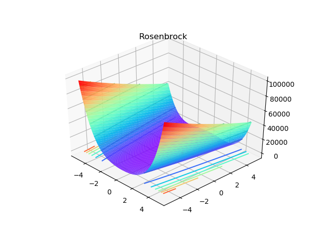
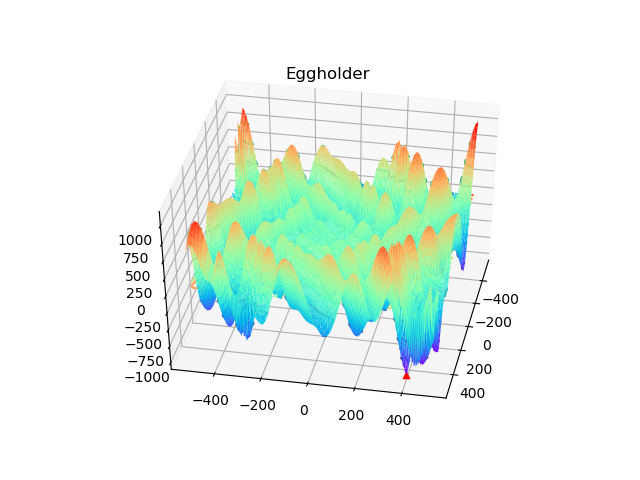
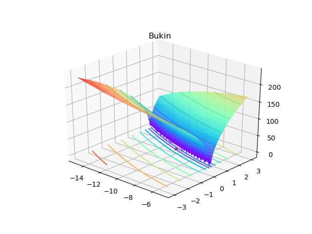

遗传算法：测试案例之函数极值¶
发布于：2018-11-05 | 分类：numeric calculation
本篇将通过求解二元函数最小值，测试此前完成的基本遗传算法及其改进代码。采用基本参数对16个常用测试函数的计算表明，除Rosenbrock、Bukin、Eggholder外，其余结果都表现出了很高的精度。而通过调整参数，也可使以上三个函数达到满意的精度。
测试函数¶
以下链接归纳了测试优化算法的经典函数，涵盖了多局部极值点（MultiModal）、可分/不可分（Separable/Inseparable）、碗状/谷状等物理/几何特征。
Virtual Library of Simulation Experiments: Test Functions and Datasets
本次测试选取了其中16个函数，其Python实现参考Test Function。采用统一配置的遗传算法对所有函数进行了测试，主要参数及测试代码如下：
- 种群大小
50，进化代数200 - 选择策略：轮盘赌
- 自适应交叉概率区间
[0.5,0.9]，比例系数0.75 - 变异概率
0.1
from GAComponents import Individual, Population
from GAOperators import RouletteWheelSelection, Crossover, Mutation
from GA import GA
from TestFun import *
import time
def test(FUN):
s = time.time()
# objective function
f = FUN()
# GA process
I = Individual(f.ranges)
P = Population(I, 50)
R = RouletteWheelSelection()
C = Crossover([0.5,0.9], 0.75)
M = Mutation(0.1)
g = GA(P, R, C, M)
# solve
res = g.run(f.objective, 200)
# theoretical result
print('---TEST FUNCTION: {0}---'.format(FUN.__name__))
print('Global solution input: {0}'.format(f.solution))
print('Global solution output: {0}'.format(f.value))
# GA result
print('GA solution input: {0}'.format(res.solution))
print('GA solution output: {0}'.format(res.evaluation))
print('spent time: {0}\n'.format(time.time()-s))
if __name__ == '__main__':
FUNS = [Ackley,Beale,Booth,Bukin,Easom,Eggholder,GoldsteinPrice,\
Himmelblau,HolderTable,Matyas,McCormick,Rastrigin,Rosenbrock,\
Schaffer,Schaffer_N4,StyblinskiTang]
for fun in FUNS:
test(fun)测试结果¶
除Rosenbrock、Bukin、Eggholder三个测试函数外，其余都达到了较高的精度。这里仅列出此三个函数的对比结果：
---TEST FUNCTION: Bukin---
Global solution input: [(-10.0, 1.0)]
Global solution output: 0.0
GA solution input: [-6.57295214 0.43203714]
GA solution output: 0.07146225964404529
spent time: 0.513136625289917
---TEST FUNCTION: Eggholder---
Global solution input: [(512, 404.2319)]
Global solution output: -959.6406627106155
GA solution input: [472.34150119 422.84647295]
GA solution output: -938.0481845022081
spent time: 0.5012533664703369
---TEST FUNCTION: Rosenbrock---
Global solution input: [(1.0, 1.0)]
Global solution output: 0.0
GA solution input: [0.98294443 0.96660976]
GA solution output: 0.00030938355446668127
spent time: 0.4364597797393799
参数调整¶
Rosenbrock¶
Rosenbrock的计算结果已有一定精度，因此考虑从增加进化代数的角度来进一步提高精度。保持原先参数的基础上取gen=500，问题得到解决。
P = Population(I, 50)
R = RouletteWheelSelection()
C = Crossover([0.5,0.9], 0.75)
M = Mutation(0.1)
g = GA(P, R, C, M)
res = g.run(f.objective, 500) # 200->500
# ---TEST FUNCTION: Rosenbrock---
# Global solution input: [(1.0, 1.0)]
# Global solution output: 0.0
# GA solution input: [0.99980462 0.99961286]
# GA solution output: 3.946596566064947e-08
# spent time: 1.0529274940490723
Eggholder¶
如上思路却不能很好地提升Eggholder函数的计算精度，观察可知其自变量区间[-512,512]跨度比较大，并且存在非常多的局部极值点。因此考虑：
- 为了避免交叉时丢失优良基因，设置较小的交叉概率下限
- 为了跳出局部极值区域，设置较大的变异率
P = Population(I, 50)
R = RouletteWheelSelection()
C = Crossover([0.005,0.9], 0.75) # [0.5,0.9]->[0.005,0.9]
M = Mutation(0.75) # 0.1->0.75
g = GA(P, R, C, M)
res = g.run(f.objective, 400) # 200->400
# ---TEST FUNCTION: Eggholder---
# Global solution input: [(512, 404.2319)]
# Global solution output: -959.6406627106155
# GA solution input: [511.98790315 404.22091999]
# GA solution output: -959.5996840391349
# spent time: 1.1881132125854492以上调整思路解决了问题。虽然一般建议变异率不超过0.1，但实际上本次采用的遗传算法的变异操作是由变异概率和变异程度共同决定的，而自适应策略设置了变异程度随着进化代数的增加而减小至零。于是实际的变异量并不会很高，也就避免了随机搜索的震荡。

Bukin¶
Bukin函数具有类似的特点，不过其自变量区间跨度并不大，于是重点调整方向为增大变异概率和遗传代数，最终效果如下：
P = Population(I, 50)
R = RouletteWheelSelection()
C = Crossover([0.5,0.9], 0.75)
M = Mutation(0.75) # 0.1->0.75
g = GA(P, R, C, M)
res = g.run(f.objective, 500) # 200->500
# ---TEST FUNCTION: Bukin---
# Global solution input: [(-10.0, 1.0)]
# Global solution output: 0.0
# GA solution input: [-10.31586646 1.06417098]
# GA solution output: 0.019204141350609386
# spent time: 1.7314023971557617